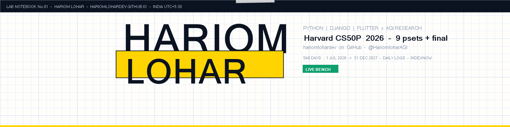
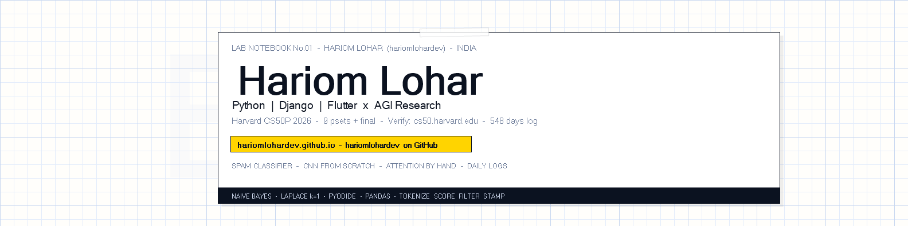
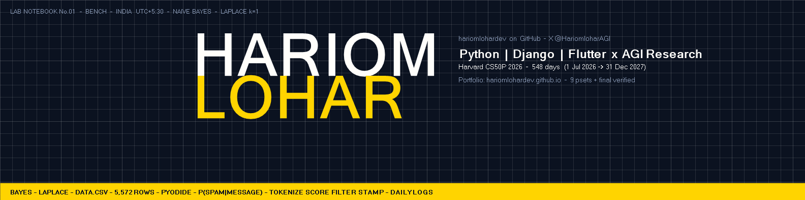
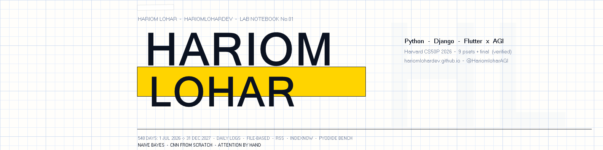
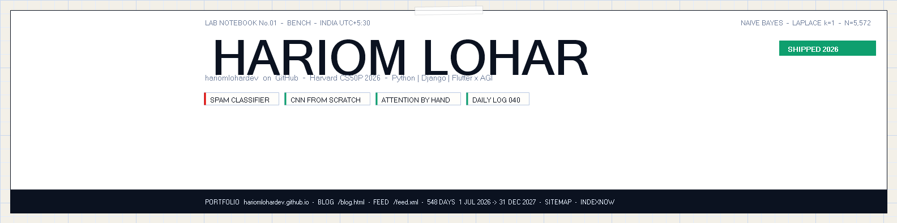

1584 x 396 - pick one for linkedin.com/in/hariomlohar. Recommended: 01 or 04 for mobile legibility (center-safe).

01 - Classic Lab Header - ink bar + signal LOHAR + live pill. Strongest for hariom lohar search.RECOMMENDED

02 - Washi Polaroid - sheet card + BAYES watermark.ALT

03 - Blueprint Ink - dark ink, max contrast.ALT - DARK

04 - Typographic Signal - minimal HL watermark, most legible.RECOMMENDED

05 - Data Strip Inspect - bench chrome + chips.ALT - TECH
Upload: LinkedIn -> Me -> View Profile -> pencil on banner -> Upload photo -> pick PNG -> adjust center-safe (keep name in middle 60%).